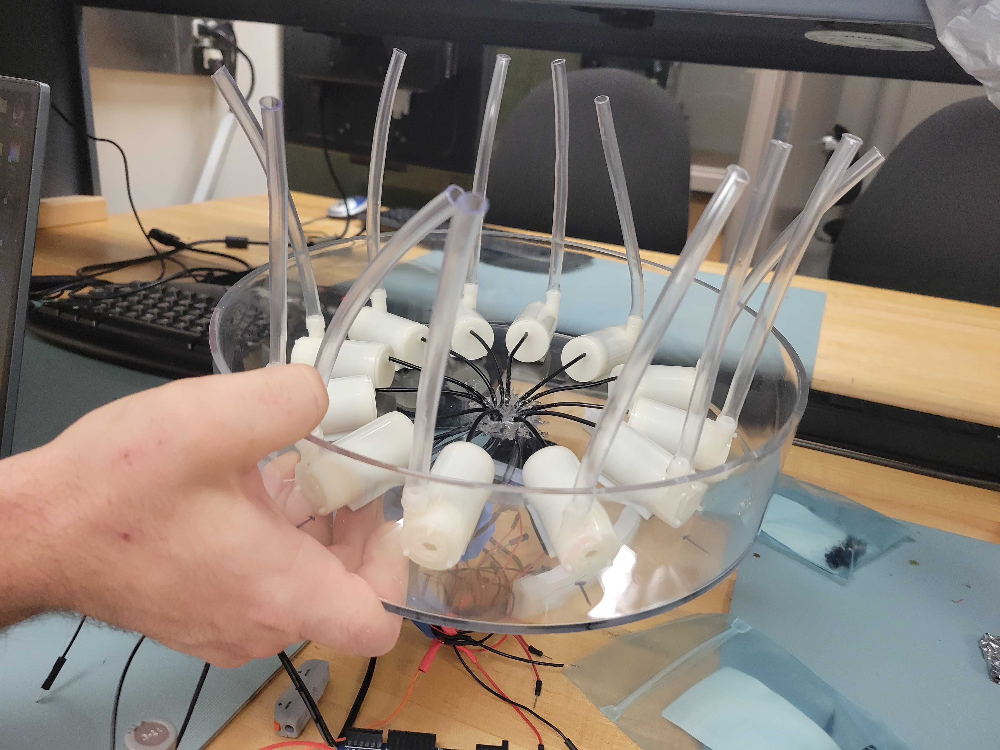
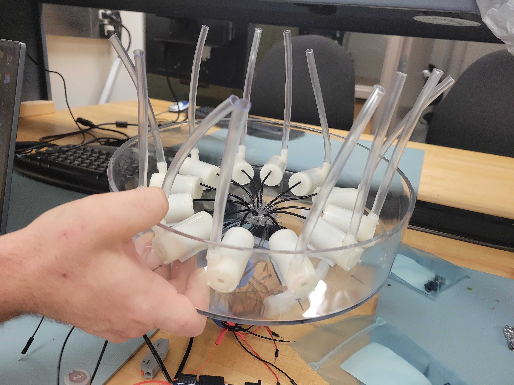

Visualize the Invisible
Meetings
2023-October-17
- Check over fall break of the print revealed the print ran out of filament roughly halfway through.
- Entirety of the stand printed okay.
- 1 3/4" (44.45mm) of pool cover was printed - will need to have a seam as to not waste printed material (and thus money).
- Cut out the remaining part of the pool cover and created gcode to print.
- Began print of the remaining part of the pool cover.
- Continuing to read analog input through the Teensy.
2023-October-5
- Presentation day
- Began print for the pool cover and stand (the main stand of the enclosure that holds up the trays).
- Need to reduce/increase size of certain joints (mostly all, though...).
- [✓] Reduce speaker side connection to pool stand.
- Initial test had the joint come out the same size for both sides of the joint.
- [] Reduce pin by 0.2mm.
- [] Cut out holes for screws to speaker.
2023-October-3
- Other group presentations
- Began 3D test print of connections and speaker hole.
2023-September-28
- Did a test print of the top of the pool cover to check the size around the tray and the track.
- Due to the flimsiness of the top of the track, the decision was made to not use the track.
- Instead, reduce the height of half of the pool cover by a little bit for the lid to sit on.
- Do the same for the rest of the encapsulation - will use previously bought flex tracks as holder for the lid.`
- Need to add a hole for the LED wires to come out.
- Size of hole from the tray is about 13mm x 13mm.
- Cut out a space from the top of the pool cover down to position of LED wires and make it 15mm wide.
- Organized wires onto breadboard.
2023-September-26
- Test printed a small version of the dovetail joint to make sure the gap between them is sufficient.
- Need to take into account the orientation of the print for strength. The wrong direction will cause shearing.
2023-September-21
- 3D printing designing.
- Attempted to do a 3D print of the sample dovetail join.
- Was using an SD card, so thought that was the issue.
- The memory card, in truth, used for the print was too large (64GB).
2023-September-19
- 3D printing designing.
- Due to Blender being difficult, switched to Tinkercad.
- Began looking for gcode sliders/generators.
- Completed base stand for the pool.
- Completed a sample dovetail joint.
2023-September-14
- Connected PWM to the PCB driver.
- 3D printing designing.
2023-September-12
- Began 3D designs on Blender.
- Began looking into other kinds of microcontroller to use instead of the Arduino UNO.
2023-September-7
- Presentation during class
- Arduino may not be strong enough to do real-time FFTs as it does not have floating point built in.
- Glued the pool area together.
- After glue is dried, another water test. No leakage at this time.
2023-September-5
- Other group presentations
- Cut out the final tray - put a hole in the center of the stage area for water to fall through.
- Assembled the pool area - put the tubes through the holes.
2023-August-31
- Used Dremel to drill holes for tubes to feed through and for LED wires.
- Double-checking to make sure center hole is the right distance away from the tube holes.
- Prep for laser cutting next time.
2023-August-29
- Start doing presentations (presenting next week Thursday)
- Cleaned board and tray.
- Speakers are 8ohms (most likely; bought as a bulk item, so no datasheet)
- The library has 3D-scanning services, so can use that to get dimensions of speakers for stand.
- Could also do it for the trays.
2023-August-24
- Finished using the Dremel on the tray.
- Began mapping location of tubes on tray and distance from the edge for center hole.
- This hole is for the water to fall back into.
- Will need to research 3D printing to see if making a stand is feasible.
- Began looking into FFTs.
- Start with base code and branch from there.
- Likely will need a delay between input and output.
- Began sketches for possible final looks.
- Acquired speakers for output.
2023-August-22
- Determined meetings with Professor - Thursdays @ 1:05-1:25p (1305-1325)
- Cut LED strip to desired length and applied electronic-grade silicon to the end.
- Currently untested, but should still work fine.
- Began using the Dremel on the tray to refine the edge.
- Laser cutting left about 0.5cm edge.
- Possible "risks" include catching and retaining water on edges when we don't want it to.
- Tested seal with pump wires with water. No leakage at this time.
2023-August-7
- Continued playing with LED light strip
- Added more silicone, this time between the wires and the edge of the tray.
- Prevents the sheathing of the wire from rubbing against the edge and fraying.
- Shouldn't, since everything else is pretty well glued down.
- Plan for using just the Arduino for everything.
- Condenses code to one area.
- More likely to find examples/help.
- Code is a bit easier to write out than Verilog...
2023-July-31
- Attempted recreation of fade-in fade-out on an LED strip via Arduino Uno.

- Attached pumps to buttom of tray with small hole cut out.
- Settled for 12 pumps since the driver is for 12 and already finished.
- Each pump is equally spaced with each other.
- Each pump has, roughly, a half-inch space between the edge and its inlet for waterflow.
 

- Started sealing the hole the wires are coming out of with silicone.
- Mainly sealing the very center, in between the wires.
2023-July-10
- Re-soldered LED strip adapter to have another wire for ground to the circuit.
- The entire circuit must share a common ground for them to all work together.
- Began looking into programming PWM for circuit.
- Planning for cutting point of the LED strip.
- Is it possible to cut it?
- Once it's cut, how to waterproof the end in case water splashes up where it shouldn't?
- Answer! Yay!
-
Laser cut two of the three trays:

2023-July-3
- Started laser cutting - tried to; computer did not move past a certain screen.
- Figured placement of the tubes for maximum capacity - roughly 18 pumps max.
- Soldered adapter to LED strips so it can receive power.
- Soldered a wire for DATAIN wire of LED for ease of access.
- Looking at PWM chip datasheet on LED to see how it works.
2023-June-19
- Began drawing up vector image for laser cutter.
- Starting code for PWM on all 12 pumps - works when plugging in as LEDs
2023-June-5
- Cleaned leftover solder/flux off board.
- Began soldering all other components - finishing the entire board.
- Tested all pumps after solder - working well when tested individually.
2023-May-29
- Figured out the dimensions of the top and bottom of the trays
- Top = 25.1 cm
- Bottom = 24.85 cm
- Side height = 6 cm
- Bottom thickness = 2.5 mm
- Side thickness = 3.5-4 mm
- Center is about 1 cm higher than the bottom edge
- Started on order for LED strip - $73.96, June 5th arrival date
- LEDs will sit on top of the pump area
- Soldered on resistors using heat gun and solder paste

- use tweezers to apply a good enough amount of paste onto the pads
- direct the heat gun over the component and keep it there until the solder bubbles and shrinks
- CAUTION: BOARD WILL BE ******HOT******
- Will need to create vector file for cutting the trays
- reduce speed of laser such that it can cut through the curved tray of the bottom.
- Top tray of pump area = leave a 1-1.5” edge around the center for the tubes to go through.
- Also cut out holes for tubes = roughly 7mm
- Stage area = one of the trays, cut the entire bottom out
- account for the thickness of the sides of the tray
- Stand/Service box = split the sheet in half lengthwise then cut out curvature of the bottom (?)
- NeoPixel silicon LED strip
- https://www.adafruit.com/product/3869
- Thicker version with standard trajectory for lighting
- not ideal for dunking underwater or long term outdoor exposure
- Durable enough for projects to survive the outdoors
2023-May-15
- Soldered wires to the pump wires such that it'd be easier to attach them to the circuit board.
- For security of the solder, added heat shrink tubing around the joint.
- Fitted plastic tubing over outlet of the pumps.
- Started looking into LED strlps again
- Found a site called Solid Apollo that may have something
2023-Apr-25
- Hooking up the pump to test the circuit again before demo.
- Demo did not work.
- Discovered the STMCube does not like Alex and erased previous settings for the Discovery Board.
- Also discovered that the PWM on the Discovery Board reads a range for 16 bits while the potentiometer outputs nowhere near as high.
2023-Apr-19
- Creating the cricuit for the prototype based off of examples found online.
- First tested to see if the pump works in general (it does), but at the same time, didn't run it for too long to prevent damage (cannot operate outside of water for very long).
- Tested circuit using an LED first to see if it can be dimmed via potentiometer.
2023-Mar-30
- Alex finished prototype schematic.
- Searching for additional materials needed, such as sealant and waterproof adhesive.
2023-Mar-23
- Continued working on the proposal...
2023-Mar-21
- Created Gantt chart for initial proposal paper.
- Acrylic trays for encapsulation shipped.
- Fiddled with LaTex formatting to get the graphics to appear (used the wrong compiler. Should have been using pdfLaTex).
2023-Feb-28
- Began presentation slides for the abstract.
- Began initial sketches for the slides.
- Continue looking for ideal pumps.
2023-Feb-22
- Created this website.
- Created the github repository housing both the website and code to run the project.
2023-Feb-17
- Discussion of the Mission Statement.
- Began looking for submersible LEDs and other options.